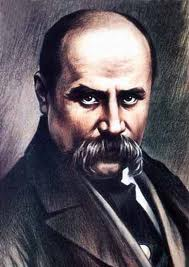

Біограaфія
Шевченко Тарас Григорович


Тарас Григорович Шевченко народився 25 лютого (9 березня за новим стилем)
1814 р. у с. Моринцях Звенигородського повіту Київської губернії (нині Звенигородський район Черкаської області) у родині Григорія Івановича Шевченка і Катерини Якимівни Бойко.
Батьки Шевченка були кріпаками магната генерал-лейтенанта Василя Васильовича Енгельгарда - поміщика, що володів 50 тис.кріпаків і був власником близько 160 тис. десятин землі.
Через рік після народження Тараса родина переїздить із Моринців до Кирилівки, у ній, окрім Тараса, було 6 дітей - старші - Катерина та Марія, брат Микита, молодші -Ярина, Марія, брат Йосип.
Вірші